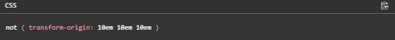

HTML adaptativo.
Erick Daniel Galaviz Saenz
Mat.238545
Bitacora 3: @supports
@supports
La regla "CSS @supports"asocia un conjunto de declaraciones anidadas en un bloque CSS (que
está delimitado por corchetes) con una condición consistente en probar declaraciones de CSS
(es decir, pares propiedad-valor, así como conjunciones, disjunciones o negaciones
abritrarias sobre ellas). A esas condiciones se le llama condición "soporta".

Operador not
El operador not puede preceder cualquier expresión para crear una nueva, resultando en la
negación de la expresión original. La siguiente expresión
Operador and
Partiendo de dos expresiones, el operador and crea una nueva expresión consistente en la
conjunción de dos originales; la expresión resultante es verdadera si sólo ambas expresiones
originales lo son.
Operador or
Partiendo de dos expresiones, el operador or crea una nueva expresión consistente en la
disyunción de dos originales; la expresión resultante es verdadera si una o ambas
expresiones originales lo son.